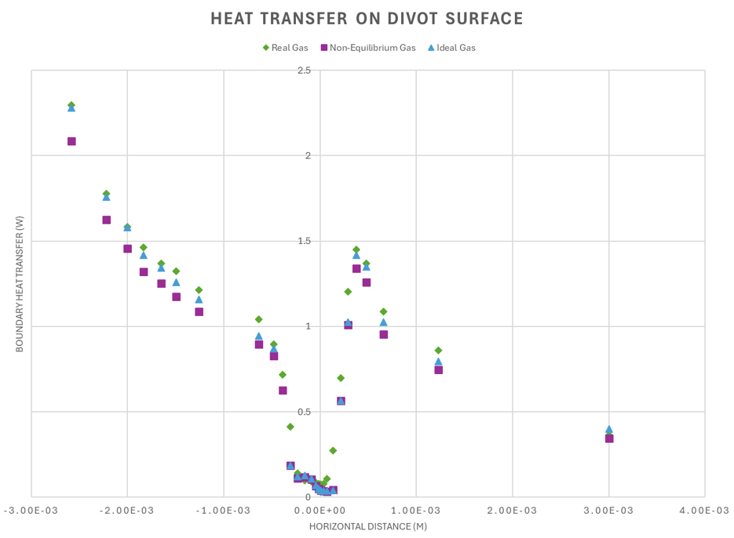
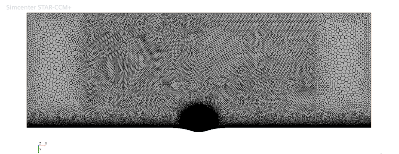
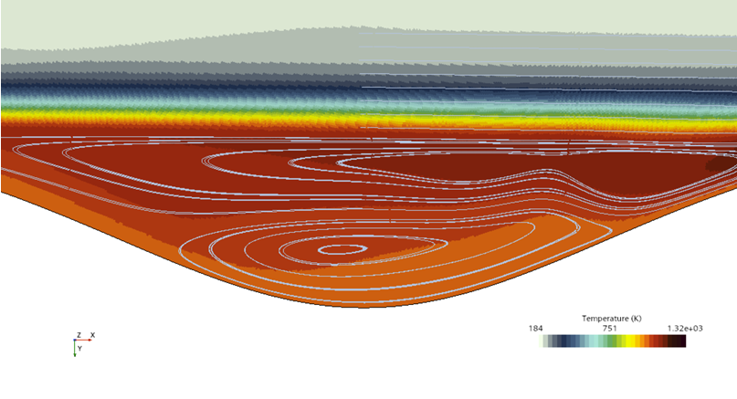

CFD-01 / AIAA SCITECH '27
Surface Defects & Thermochemistry in Hypersonic Boundary Layers
CFD study of Mach 6 flow over flat-plate divots of varying depth, isolating how recirculation structure and gas-model choice (ideal vs. real vs. non-equilibrium air) shift peak surface heating during reentry. Comparing gas models across divot depths revealed a 120 K discrepancy in peak surface temperature and shifts in recirculation structure attributable to real-gas thermochemical effects.
Tracy, H. B., and Sharma Priyadarshini, M., “Effect of Surface Defects and Thermochemistry on Laminar Hypersonic Boundary Layers,” AIAA SciTech 2027 Forum, 2027 (accepted).
STAR-CCM+
Python
LaTex



Hypersonic Aerothermodynamics
2026